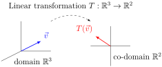

A linear transformation (also known as a linear map) is a map between vector spaces that preserves the vector space operations. More precisely, if \(V\) and \(W\) are vector spaces, a map \(T:V\rightarrow W\) is called a linear transformation if
\(T(\vec{v}+\vec{w}) = T(\vec{v})+T(\vec{w})\) for any \(\vec{v},\vec{w} \in V\text{.}\)
\(T(c\vec{v}) = cT(\vec{v})\) for any \(c \in \IR,\vec{v} \in V\text{.}\)
In other words, a map is linear when vector space operations can be applied before or after the transformation without affecting the result.
Definition3.1.2.
Given a linear transformation \(T:V\to W\text{,}\)\(V\) is called the domain of \(T\) and \(W\) is called the co-domain of \(T\text{.}\)

Figure3.1.3.A linear transformation with a domain of \(\IR^3\) and a codomain of \(\IR^2\)
Example3.1.4.
Let \(T : \IR^3 \rightarrow \IR^2\) be given by
\begin{equation*}
T\left(\left[\begin{array}{c} x \\ y \\ z \end{array}\right] \right)
=
\left[\begin{array}{c} x-z \\ 3y \end{array}\right]
\end{equation*}
To show that \(T\) is linear, we must verify...
\begin{equation*}
T\left(
\left[\begin{array}{c} x \\ y \\ z \end{array}\right] +
\left[\begin{array}{c} u \\ v \\ w \end{array}\right]
\right)
=
T\left(
\left[\begin{array}{c} x+u \\ y+v \\ z+w \end{array}\right]
\right) =
\left[\begin{array}{c} (x+u)-(z+w) \\ 3(y+v) \end{array}\right]
\end{equation*}
\begin{equation*}
T\left(
\left[\begin{array}{c} x \\ y \\ z \end{array}\right]
\right) + T\left(
\left[\begin{array}{c} u \\ v \\ w \end{array}\right]
\right)
=
\left[\begin{array}{c} x-z \\ 3y \end{array}\right] +
\left[\begin{array}{c} u-w \\ 3v \end{array}\right]=
\left[\begin{array}{c} (x+u)-(z+w) \\ 3(y+v) \end{array}\right]
\end{equation*}
And also...
\begin{equation*}
T\left(c\left[\begin{array}{c} x \\ y \\ z \end{array}\right] \right)
=
T\left(\left[\begin{array}{c} cx \\ cy \\ cz \end{array}\right] \right)
=
\left[\begin{array}{c} cx-cz \\ 3cy \end{array}\right]
\text{ and }
cT\left(\left[\begin{array}{c} x \\ y \\ z \end{array}\right] \right)
=
c\left[\begin{array}{c} x-z \\ 3y \end{array}\right]
=
\left[\begin{array}{c} cx-cz \\ 3cy \end{array}\right]
\end{equation*}
Therefore \(T\) is a linear transformation.
Example3.1.5.
Let \(T : \IR^2 \rightarrow \IR^4\) be given by
\begin{equation*}
T\left(\left[\begin{array}{c} x \\ y \end{array}\right] \right)
=
\left[\begin{array}{c} x+y \\ x^2 \\ y+3 \\ y-2^x \end{array}\right]
\end{equation*}
To show that \(T\) is not linear, we only need to find one counterexample.
Since the resulting vectors are different, \(T\) is not a linear transformation.
Fact3.1.6.
A map between Euclidean spaces \(T:\IR^n\to\IR^m\) is linear exactly when every component of the output is a linear combination of the variables of \(\IR^n\text{.}\)
For example, the following map is definitely linear because \(x-z\) and \(3y\) are linear combinations of \(x,y,z\text{:}\)
\begin{equation*}
T\left(\left[\begin{array}{c} x \\ y \\ z \end{array}\right] \right)
=
\left[\begin{array}{c} x-z \\ 3y \end{array}\right]
=
\left[\begin{array}{c} 1x+0y-1z \\ 0x+3y+0z \end{array}\right]
\end{equation*}
But this map is not linear because \(x^2\text{,}\)\(y+3\text{,}\) and \(y-2^x\) are not linear combinations (even though \(x+y\) is):
\begin{equation*}
T\left(\left[\begin{array}{c} x \\ y \end{array}\right] \right)
=
\left[\begin{array}{c} x+y \\ x^2 \\ y+3 \\ y-2^x \end{array}\right]
\end{equation*}
Activity3.1.7.
Recall the following rules from calculus, where \(D:\P\to\P\) is the derivative map defined by \(D(f(x))=f'(x)\) for each polynomial \(f\text{.}\)
Compute \(S(x^4+x)\text{,}\)\(S(x^4)+S(x)\text{,}\)\(T(x^4+x)\text{,}\) and \(T(x^4)+T(x)\text{.}\) Which of these maps is definitely not linear?
Fact3.1.9.
If \(L:V\to W\) is linear, then \(L(\vec z)=L(0\vec v)=0L(\vec v)=\vec z\) where \(\vec z\) is the additive identity of the vector spaces \(V,W\text{.}\)
Put another way, an easy way to prove that a map like \(T(f(x)) = f'(x)+x^3\) can't be linear is because